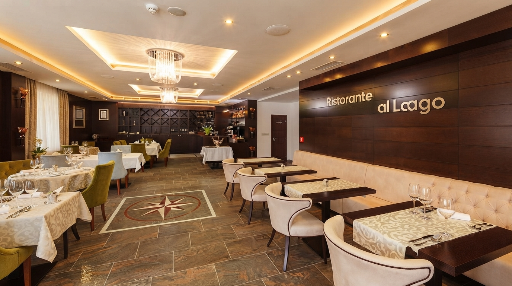
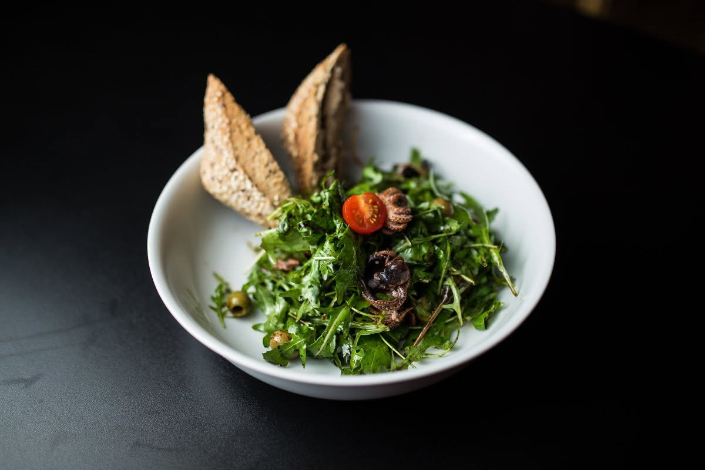
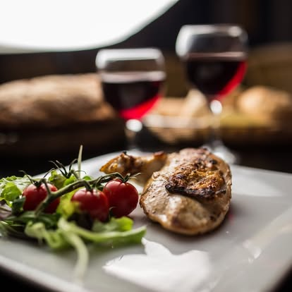
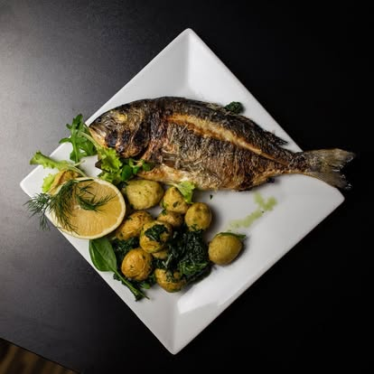
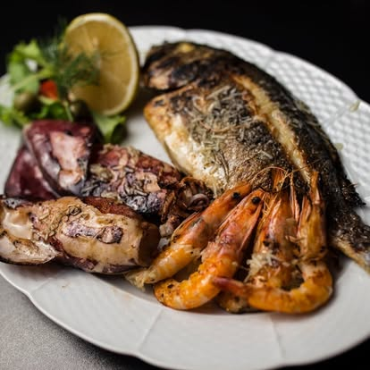
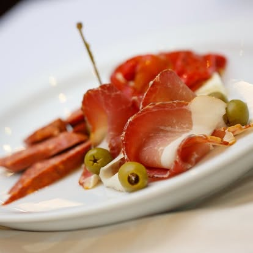
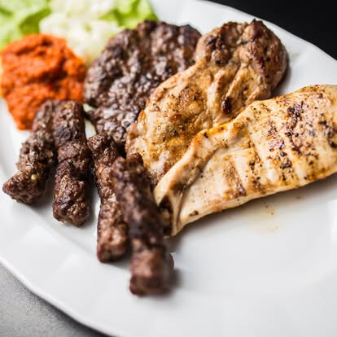
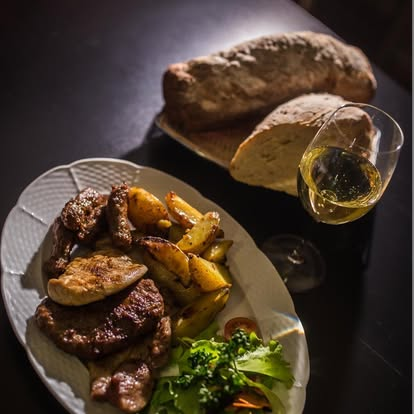
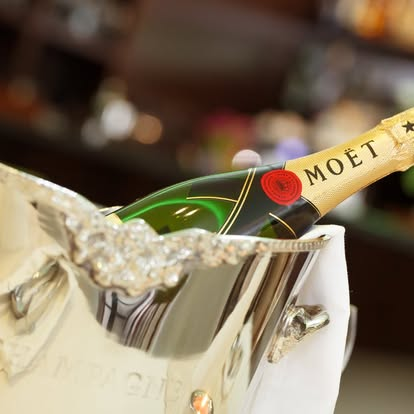
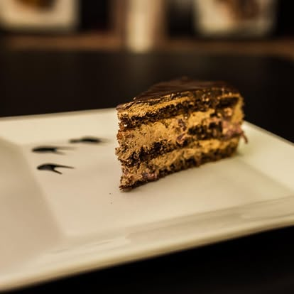

Reštaurácia Al Lago
Chuť Stredomoria v Snine
„Jedlo je tajomná vec. Nie je banálna, ako sa nám zdá, pokiaľ sme jeho zmysel neredukovali len na uspokojenie biologických potrieb. Jedlo je proces, pri ktorom sa niečo, čo je vonkajšie, stáva súčasťou nás samých.“
Tomáš Halík
Ristorante al Lago
V reštaurácii Al Lago, ktorá je primárne zameraná na zdravú stredomorskú kuchyňu, Vám šéfkuchár s láskou pripraví akékoľvek menu z jedálneho lístka. Odporúčame Vám ochutnať rôzne druhy stredomorských vín, ktoré sú vhodné k jedlám z nášho jedálneho lístka.
Z našej kuchyne








